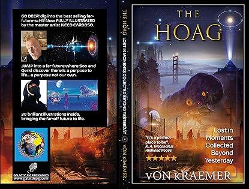
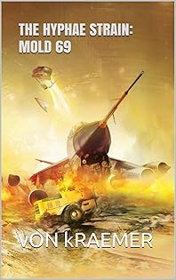
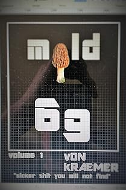
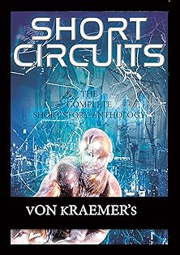
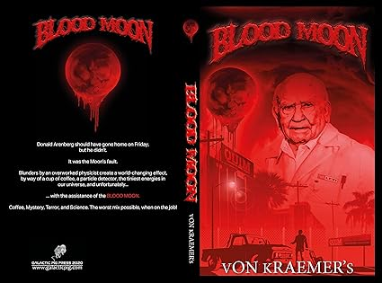
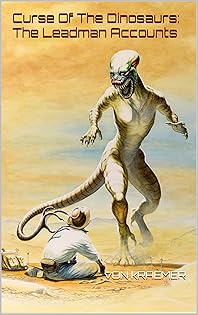

Kraemerverse
The Kraemerverse is a collection of speculative fiction and hardcore science fiction works authored by vON kRAEMER. It encompasses multiple interconnected storylines, spanning from near-future Cold War thrillers to far-future galactic federations such as the HOAG Universe.
About the Author

| Occupation | Author, Effects Artist, Musician |
|---|---|
| Genre | Hard Science Fiction, Horror |
| Company | Galactic Pig Productions, Go Robotics FX |
| Location | North Hollywood, LA |
Speculative fiction has always been a part of the author’s life. Son of design engineer and futurist, Mitchell Bobrick, a science fiction book was more-often in the author’s hands than not. Hard Sci-Fi authors like Niven, Benford, Baxter, and Haldeman forged Von’s "High Science" interest - most often used in his literature. Horror also plays a key role, as most of his works are elementary future dysfunction.
When not behind the computer keyboard the author spent the greater part of his life working behind camera for Hollywood. The author owns and operates RAD sets and effects, and currently runs Galactic Pig Productions - a small Sci-Fi production company. He also owns Go Robotics FX, a company dedicated to invention and 3-D printing.
He can be found on occasion about LA playing the bass guitar and pounding a few brews. He looks forward to unleashing the rest of what has patiently sat in his data vaults - upon the general public, for better or worse. Write the author: von@galacticpig.com, and he will get back to you, and likely invite you for a beer. The author lives in North Hollywood.
Bibliography
The HOAG
THE HOAG Lost In Moments Collected Beyond Yesterday: Book 1
JUMP into a far future where Soo and Qerid discover there is a purpose to live... a purpose not our own. G O DEEP! Dig into the best selling far-future sci-fi. Now fully illustrated by master artist Neco Kury Cardoso. OVER 30 spectacular images that will send you into the 49th century, where the last natural humanity tries to survive in a universe that has left the ancients behind. Yet for all our human simplicities and failures there is one - who has the ability to change all that exists. Rock on through this day-a-life of one of HomeWorld's very last living humans. There is no other Sci-fi Novel written to date that can compare with this groundbreaking Future tale, in all of its complexity. HARDCORE science fiction for those readers who demand "better."
The Hyphae Strain

THE HYPHAE STRAIN: MOLD 69 (BOOK ONE)
A prototype cold war aircraft disintegrates and vanishes in 1964; a mail clerk discovers a lost package sent in 1969. Mik and Bitta are whirled into our insidious underworld - a group which has been hiding since before the birth of Christ. What was once a dark secret is now loose and many shall pay the price. A substance re-discovered in 1937 Japan is now running amok in today's world, and none who partake in the _Slam_ will ever be the same. Our world will change; bent by a will not our own. Prepare for the most disturbing and twisted ride of your life. The Hyphae Strain; a page-turner sure to horrify your very being.

MOLD 69: The Original The Hyphea Strain; Mold 69 collector edition
THE ORIGINAL BOOK> Uneditied. Collectors edition. "WHAT IS MOLD 69?" Open the cover and discover the most twisted, sick and horrifying story you will ever read. What HORROR / SCI-FI fans expect in a great novel. A triple XXX rating for action and content. Not for those faint of heart. More intense than Steven King; science instead of the supernatural. At book's end you find yourself deep in a real world - hidden within our own. You will be transported from 1964 to 2019 to 1945. The path upon which MOLD 69 crawls. MOLD 69 is more than what is on the surface, MOLD 69 is insidious, and will "slam" under your skin.
Anthologies

SHORT CIRCUITS: The Complete Short Story Anthology
SHORT CIRCUITS Found within these pages are vON kRAEMER’s very bests. Short stories that will not only make you think but: Laugh, ponder, freak out, and question our future. 20 years of shorts that will leave you saying: “ What the #@*% ! “ Journey down the fractured cobbles. Leave the normal path and become both satisfied and amazed. Inside are not only shorts but vON kRAEMER’s teasers; his best selling novels. Worthy writs; taking you beyond.
Other Works
RESTART
Arthur Rossi was a Football Hero! However, Art's last touchdown was forty years ago. He would never run again. The cancer had tackled him for the last time. Death was certainly only days away... unless Arthur agreed to do the RESTART. The procedure would cure his cancer. RESTART had a 100% success rate. However, with every gift, comes a cost. A cost that would change Art's life forever. Should he choose to live forever... in a form Far Different from his previous existence.

BLOOD MOON
Donald Arenberg should have gone home on Friday, but he didn't. It was the Moon's fault. Blunders by an overworked physicist create a world-changing effect, by way of a cup of coffee, a particle detector, the tiniest energies in our universe, and unfortunately...... with the assistance of the BLOOD MOON. Coffee, Mystery, Terror, and Science. The worst mix possible, when on the job!

Curse Of The Dinosaurs: The Leadman Accounts
DARK HUMOR AT ITS BEST. What a paleontologist discovers in the Chinese Gobi Desert alters humanity’s destiny. Prepare for the most action-packed and disturbing ride of your petty human existence. CURSE OF THE DINOSAURS, consider yourself fortunate the dinosaurs are currently extinct. Soon to be a Feature Film! The revised edition which conforms to the movie - with extras.
The HOAG Universe
The HOAG universe spans the GalacticPig Super-Group — a federation of 50 colonized galaxies including the Milky Way, Andromeda, and Triangulum. Earth, now called HomeWorld, is the ancestral cradle of humanity. A universal AI known as Server connects all Persons and Personates across colonized space.
Humanity has fractured into several distinct types:
- Genetic Originals (GOs): Unmodified humans who reject genetic enhancement.
- Personates: Genetically Enhanced (GE) offshoots of Homo Sapiens adapted for colony-world survival.
- Augmented: Humans who have accepted various cybernetic or biological enhancements.
- Exiters: Former humans who have abandoned biological life entirely and now occupy the Andromeda galaxy behind an AI firewall called OmniBlock.